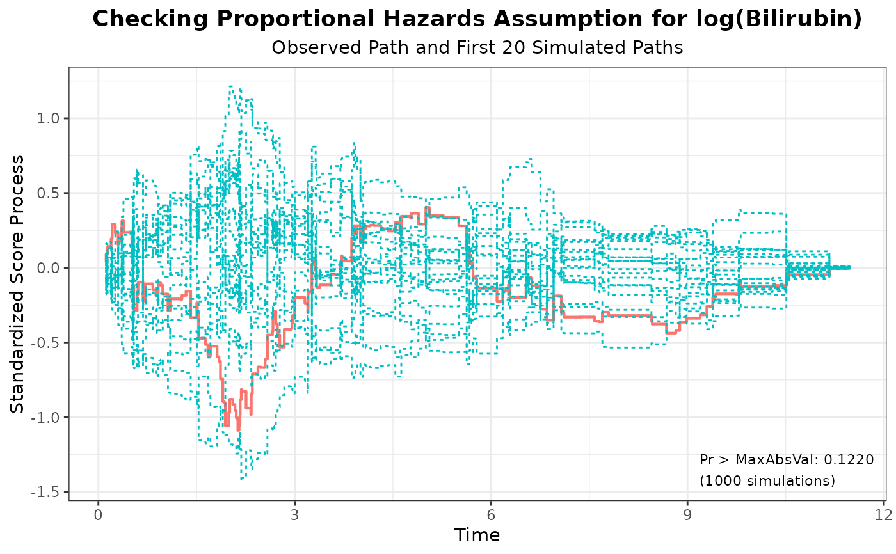
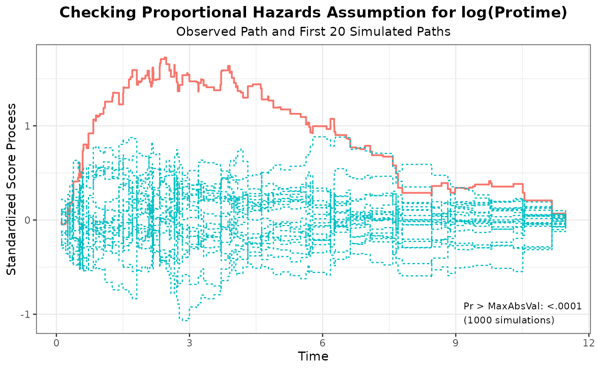
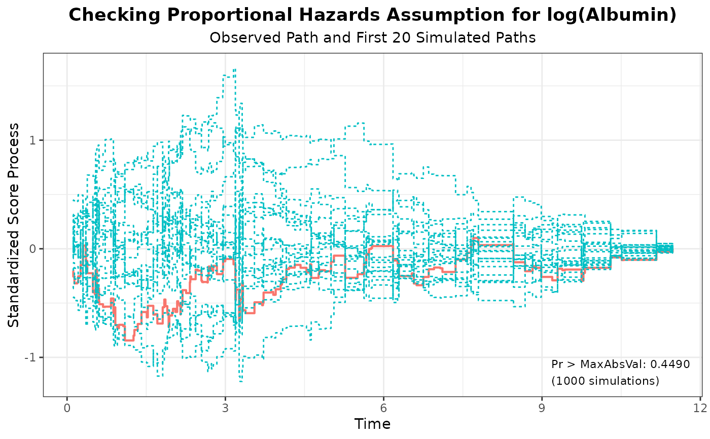
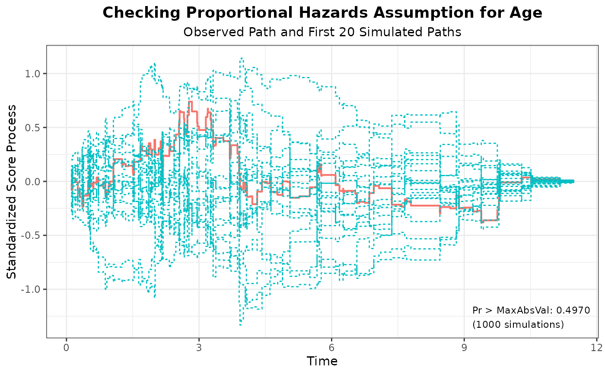
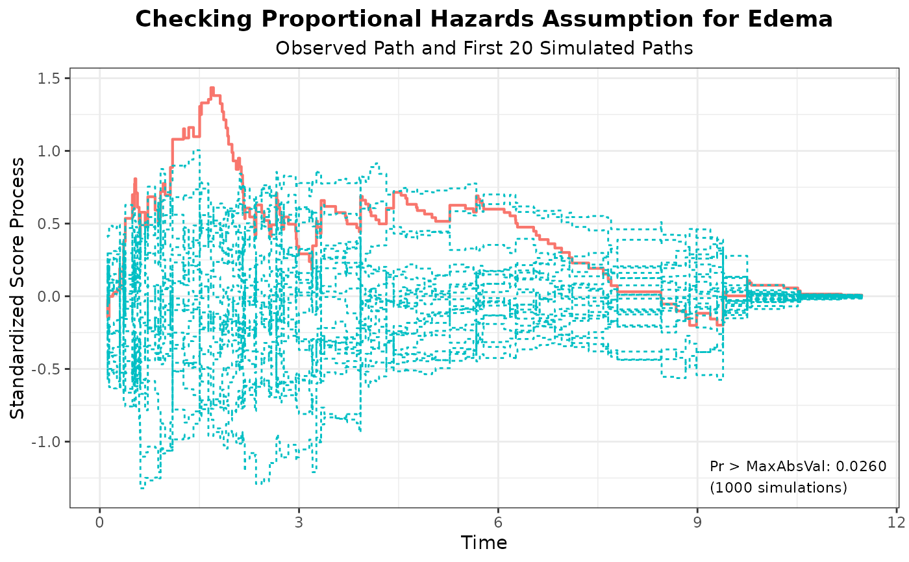

Assess Proportional Hazards Assumption Based on Supremum Test
Source:R/assess_phregr.R
assess_phregr.RdObtains the standardized score processes and the simulated distribution under the null hypothesis as well as the p-values for the supremum tests.
Value
A list with the following components:
timethe unique event times.score_tthe observed standardized score process.score_t_lista list of simulated standardized score processes under the null hypothesis.max_abs_valuethe supremum of the absolute value of the observed standardized score process for each covariate and the supremum of the sum of absolute values of the observed standardized score processes across all covariates.p_valuethe p-values for the supremum tests for each covariate and the global test.
References
D. Y. Lin, L. J. Wei, and Z. Ying. Checking the Cox model with cumulative sums of martingale-based residuals. Biometrika 1993; 80:557-572.
Author
Kaifeng Lu, kaifenglu@gmail.com
Examples
fit <- phregr(data = liver, time = "Time", event = "Status",
covariates = c("log(Bilirubin)", "log(Protime)",
"log(Albumin)", "Age", "Edema"),
ties = "breslow")
aph <- assess_phregr(fit, resample = 1000, seed = 314159)
aph
#> covariate max_abs_value resample seed p_value
#> 1 log(Bilirubin) 1.0880 1000 314159 0.1220
#> 2 log(Protime) 1.7243 1000 314159 <.0001
#> 3 log(Albumin) 0.8443 1000 314159 0.4490
#> 4 Age 0.7387 1000 314159 0.4970
#> 5 Edema 1.4350 1000 314159 0.0260
#> 6 GLOBAL 4.5107 1000 314159 0.0080
plot(aph, nsim = 20)
#> [[1]]

#>
#> [[2]]

#>
#> [[3]]

#>
#> [[4]]

#>
#> [[5]]

#>